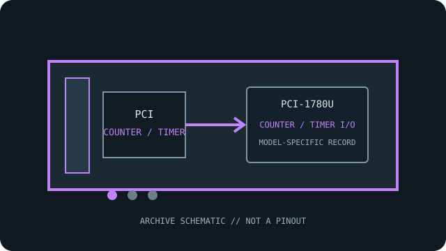

[ INDIVIDUAL COMPONENT // COUNTER / TIMER I/O ]
Advantech PCI-1780U
Eight independent 16-bit counter/timer channels provide TTL timing and event-counting functions. This model-specific archival record separates published specifications from system-compatibility assumptions.

MODEL SCOPE: Advantech PCI-1780U. Confirm exact board label, revision, connector/accessory, firmware and host slot before installation.
Reference specifications
| Exact model | Advantech PCI-1780U |
|---|---|
| Host bus / lanes | 32-bit universal PCI; conventional PCI, not PCI Express. PCIe lanes: not applicable; this is a PCI model. |
| Channels, ranges and resolution | Eight independent 16-bit counter/timer channels; manufacturer specifications list programmable clock sources and input frequency up to 20 MHz. Eight TTL digital inputs and eight TTL digital outputs are available. Analog-input range and ADC resolution do not apply. |
| Isolation / safety rating | No galvanic isolation specified for the TTL counters or digital lines; signals are ground-referenced. |
| Operating system and API | Windows: Advantech DAQNavi / device-driver API family; verify the current PCI-1780U driver, counter API and OS support matrix before deployment. |
| Compatibility notes | Observe TTL voltage, edge timing and input-frequency limits; external clock wiring and signal quality affect counts. Universal PCI compatibility does not make the card a PCIe device. |
Compatibility, care & archival notes
- Verify the full model suffix and revision against the manufacturer's manual; similarly numbered variants can change I/O functions.
- Use a conventional PCI slot of supported voltage/keying; the card is not a PCIe x1/x4/x8/x16 device.
- Record driver version, OS bitness, connector accessories, wiring and calibration state alongside any installation.
Sources & further reading
- Advantech — PCI-1780U product specifications and technical downloadsManufacturer specifications and technical-download entry for the exact model; verify the board revision and document revision.
- Advantech — Advantech manual search for PCI-1780UManufacturer manual or datasheet source for installation, signal limits and programming; the model-specific guide governs exact compatibility.
- Advantech — DAQNavi Assistant VI User GuideManufacturer software/API reference; not a guarantee that a legacy board is supported by every current OS package.